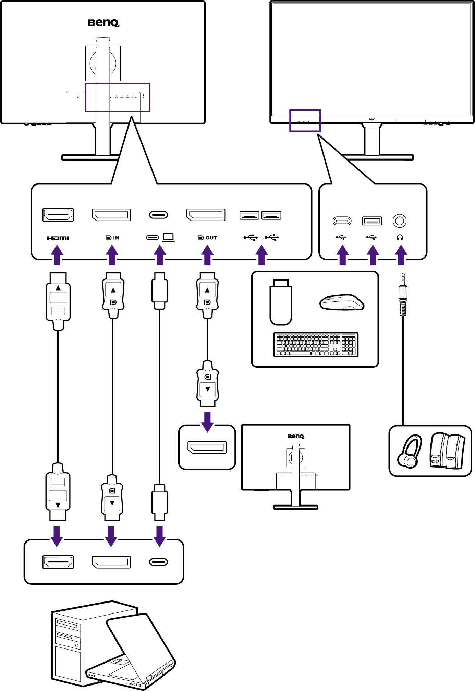
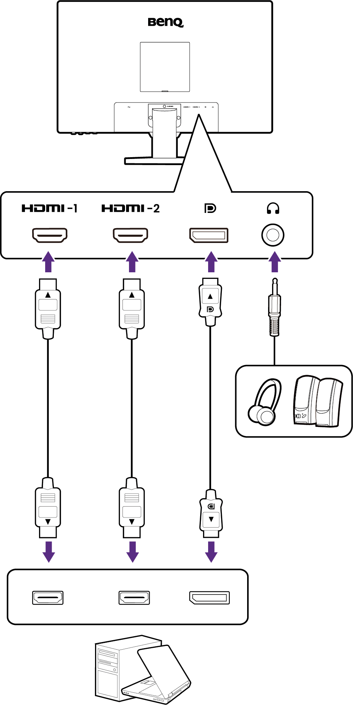

Getting to know your monitor
Front view
GW2790QT/GW3290QT

GW2490/GW2490T/GW2790/GW2790T

GW2790Q

- USB-C™ port (for data transfer and power delivery up to 7.5W)
- USB 3.2 Gen 1 ports (downstream; connecting to the USB devices)
- Headphone jack
- Speakers
- Light sensor
- Built-in microphone and MIC LED indicator (See page 44 for details.)
- MIC key
- Noise Filter Speaker key
- Low Blue Light Plus key
- 5-way controller
- Power button / Power LED indicator
- Input key
Back view
GW2790QT/GW3290QT

GW2490/GW2490T/GW2790/GW2790T

GW2790Q

- AC power input jack
- HDMI socket
- DisplayPort socket
- USB-C™ port (for signal transmission and power delivery up to 65W)
- DisplayPort output socket (for Multi-Stream Transport, MST)
- USB 3.2 Gen 1 ports (downstream; connecting to the USB devices)
- Kensington lock slot
- VESA cover
- Headphone jack
- Speakers
- Above diagram may vary depending on the model.
- Picture may differ from product supplied for your region.
- (Applicable for products with white case) The case of the product may turn yellow in about 3 years due to the photo-oxidation reactions induced by light. This is a normal phenomenon and should not be considered as manufacturing defect.
Connections
The following connection illustrations are for your reference only. For cables that are not supplied with your product, you can purchase them separately.
For detailed connection methods, see page 23 (for models with height adjustment stand) or 33 (for models without height adjustment stand).
GW2790QT/GW3290QT

GW2490/GW2490T/GW2790/GW2790T/GW2790Q

Power delivery of USB-C™ ports on your monitor (GW2790QT/GW3290QT only)
With the power delivery function, your monitor helps supply power to the connected USB-C™ devices. Available power varies by port. Make sure the devices are connected to the appropriate ports to be activated properly with sufficient power.
| GW2790QT/GW3290QT | |
|---|---|
| USB-C™ Power Delivery (on the rear of the monitor) |
|
| 5V / 3A | |
| 9V / 3A | |
| 12V / 3A | |
| 15V / 3A | |
| 20V / 3.25A |
- A connected device needs to be equipped with a USB-C™ connector that supports charging function via USB power delivery.
- The connected device can be charged via USB-C™ port even when the monitor is in power saving mode.(*)
- The USB power delivery is up to 65W. If the connected device requires more than 65W for operation or for boot up (when the battery is drained), use the original power adapter that came with the device.
- The information is based on the standard testing criteria and is provided for reference. The compatibility is not guaranteed as the user environments vary. If a separately purchased USB-C™ cable is used, make sure the cable is certified by USB-IF and is full-featured, with power delivery and video / audio / data transfer functions.
*: Charging via USB-C™ in monitor power saving mode is available when the USB-C power delivery function is enabled. Go to System > USB-C Awake and select ON.